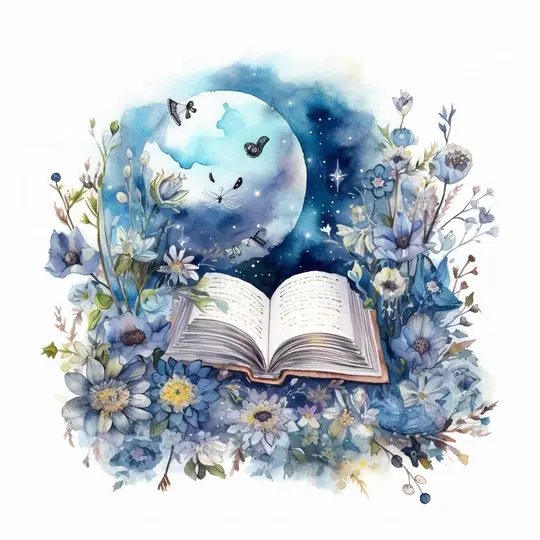

Здесь живут твои истории.
Знакомые герои, неожиданные открытия, тайны, смех и волшебство — всё, что хочется сохранить между страницами.
Новая книга — новая история
Прочитала, читаешь или просто присмотрела книгу? Добавь её сюда, чтобы ничего не потерялось.
Сейчас читаю и книги на руках
Сюда попадают книги, которые читаются сейчас, и те, которые нужно вернуть вовремя.
Сейчас читаю
Маленькая полка для историй, которые продолжаются
Книги на руках
РГДБ, Ушакова, другие библиотеки и книги у друзей
Срок по умолчанию 30 дней. Напоминание — за 7 дней или за выбранный срок. Для телефона можно скачать событие календаря.
Истории в цифрах
Сколько миров уже открыто? Бумажные, электронные, любимые и немного книжной магии.
Коллекция открытий
Статистика личного чтения
Книжный календарь
Все мои книги
Каждая история на своей полке. Открывай любимые страницы, находи новые и возвращайся к прочитанному.
Выбери свою историю
Поиск по названию и автору · стрелка справа покажет алфавитный список
Книжные миры Мари
Каждая история получает тематическую полку по названию и жанру. Переложить её в другой мир можно в карточке.
Новая полка появится рядом с остальными. Книги можно перенести на неё из их карточек.
Как книги распределяются по мирам?
Тайны и детективы — книги с пометкой «детектив» и явными словами о тайнах и расследованиях.
Школьные истории — школа, друзья, одноклассники, каникулы и похожие сюжеты.
Приключения — путешествия, острова и приключенческие сюжеты.
Сказочные миры — сказки, фантастика, магия и фэнтези.
Другие истории — когда по названию или жанру тему определить нельзя. Это не оценка книги: полки предложены автоматически и могут ошибаться. Мари может выбрать любую другую полку.
То, что хочется сохранить
Не сочинение для школы. Просто то, что однажды хочется вспомнить.
Вещи, которые
остаются с нами
«Между страницами остаются наши маленькие чудеса».
Впечатления, любимые моменты, рисунки, фотографии. Здесь ничего не нужно писать «правильно».

Мои книжные заметки
Все чувства, рисунки и фотографии — рядом с книгой, к которой они относятся.
Последние впечатления
Книги, которые особенно близки
Мои любимые истории
Те, к которым хочется возвращаться, даже когда они закончились.
Удиви меня
Пусть случай решит, что открыть дальше: из списка желаний и отложенных книг.
Полка желаний
Книжные циклы Мари
Собирай книги одного автора по порядку томов. Начать с первого тома и идти до последнего — всё на одной книжной полке.
Лента прочитанных лет
Открывай свой прошлый год и вспоминай, какие истории тогда были рядом.
История чтения

Время чтения здесь может быть примерным. Если точная дата неизвестна, не выдумываем её.
Книги 2026 года
Небо книжных открытий
Здесь звезда — это автор, а маленькие огоньки вокруг неё — прочитанные книги. Нажми на созвездие, чтобы увидеть все истории автора.